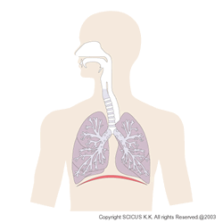
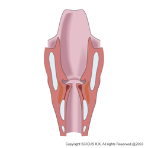
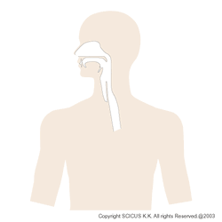

ボイスマネージは言語聴覚士である村上由美が「声」と「話し方」をトレーニングするサービスを提供しています。
今までの「話し方」のトレーニングというとどうしても話の内容などが重視されますが、ボイスマネージでは
・呼吸
・発声（声帯周辺の動き）
・構音（いわゆる発音）
をメインにトレーニングしていきます。
ところでここでいくつかの疑問が出てきたかと思われます。
１．言語聴覚士ってどんな仕事なの？
 言語聴覚士というのは聞こえ、ことば、コミュニケーションや食べ物を飲み込むこと（専門用語では嚥下：えんげと言います）が不自由な方に医療的なトレーニングを行う国家資格です。つまり声や話し方については疾患や障害のある方にも対応する資格です。
しかしこの仕事の名前を聞いたことがある方はほとんどいらっしゃらないでしょう。それもそのはずです。言語聴覚士はリハビリテーションの専門病院や福祉施設といった場所で働いているため、普段の生活でお目にかかることはほとんどありません。
知名度は低いのですが、声と話し方に関しては医学的な知識（解剖・生理など）やリハビリテーションの技術に基づいてアドバイスやトレーニングを行います。
２．今までのボイストレーニングとの違いは？
 今までのボイストレーニングは歌声が中心でした。そのため声楽の知識に基づいて行っていることが多く、多くの割合で音楽関係の方で占められています。
話し声は歌う時とは微妙に使う場所が異なりますから、話し声のトレーニングをしたい方のニーズに応じきれていない面もありました。
最近は話し声のボイストレーニングも出てきましたが、中には疾患などが隠れているケースもあり、できたら医学的な知識がある人の指導を受けた方がいい方もいらっしゃいます。
言語聴覚士は元々医療系の資格のため、このような方にも対応し、必要に応じて医師の診察を受けるよう助言を行うことも可能です。また、病気とは言えないまでも自分の発音などを細かくチェックしてほしい、という方のニーズにこたえるスキルを持っています。
３．どんなトレーニングなの？
 まず、声に関する悩みなどを聞き、さらにチェックリストなど質問紙で現状を明確にしていきます。
次に筋肉の様子を目で見て触った後、呼吸の様子を確認します。その後声域や声の特徴等、発声や発語の評価を行います。
その後、評価の結果及び重点的に行ってほしいエクササイズを指導します。定期的に電話や対面でチェックを行い、より目的に応じた課題を組み立てていきます。
拙著「声と話し方のトレーニング」（平凡社新書454）もご参照ください。
個別指導のメニューについてはこちら
をご覧ください。
４．個別指導以外はどんなプログラムがあるの？
 過去には「声を使う仕事の人のためのボイスマネージメント講座」を開催していました。
過去には「声を使う仕事の人のためのボイスマネージメント講座」を開催していました。
（詳しくはこちら）
現在オンライン・プログラムや動画配信を検討中です。
また、音訳ボランティア研修での実績も数多くあります。（基礎研修～中級者向け講座及び個別音声評価）
他にも社内研修など、リクエストに応じてプログラムを作成します。
社内研修のメニューとして
・概要の講義（２～３時間前後）
・概要の講義＋簡単なエクササイズ
・10名前後対象の講義＋エクササイズ・個別プログラム
・２回の講義＋評価（エクササイズ・個別プログラム付き）
料金や規模など、ご相談に応じます。
※個別プログラムを作成する場合は一度に対応できる人数が限られますのでご了承ください。
連絡先
104-0061 東京都中央区銀座1-22-11
銀座大竹ビジデンス2階
twitter yumimrkm
email yumi★nadita.com（★を@に変換して送信してください）